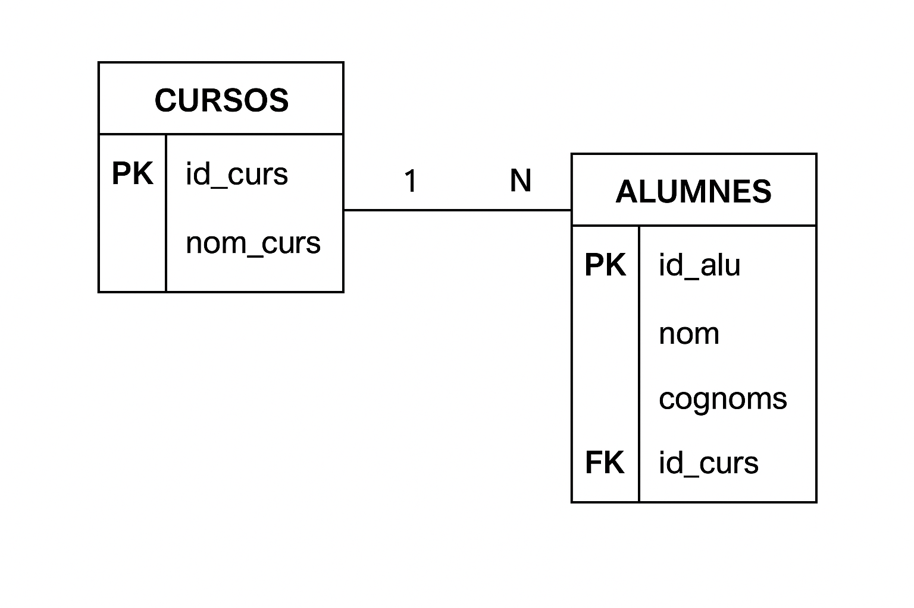

Introducció al repàs SQL
🎯 Objectiu de la unitat
Aquesta unitat forma part del mòdul ASGBD – Administració de Sistemes Gestors de Bases de Dades del cicle formatiu ASIX (Administració de Sistemes Informàtics en Xarxa). Té com a objectiu fer un repàs pràctic i teòric dels fonaments de SQL, el llenguatge estàndard per a treballar amb bases de dades relacionals.
Contingut a repassar
Durant el primer curs es van adquirir les bases de treball amb SQL : creació i modificació d’estructures, manipulació de dades i consultes bàsiques. Ara, es revisen aquests conceptes per consolidar coneixements i preparar-se per tasques més avançades com l’administració, optimització i seguretat del sistema gestor.
- Definició de taules i manipulació de dades (DDL i DML)
- Ús de claus primàries i foranes
- Consultes amb filtres, ordenacions i funcions agregades (DQL)
- Funcions i operadors
- Permisos:
GRANTiREVOKE(DCL) - Transaccions i control d’errors:
COMMITiROLLBACK(TCL) - Models relacionals i bones pràctiques de disseny
Importància del repàs
Aquest reforç no sols ajuda a recordar conceptes, sinó que també prepara per:
- Entendre el comportament intern del SGBD
- Millorar la qualitat de les consultes i scripts
- Desenvolupar sistemes més segurs i eficients
🔠 Dades: Tipus de dades
Una dada en el context d'una base de dades és una unitat bàsica d'informació que s'emmagatzema i s'utilitza per a realitzar operacions o obtenir coneixement. Es tracta d'un element que representa un fet concret, i pot ser de diversos tipus (numèric, textual, temporal, etc.).
Lloc on posar les dades: Variables o Cel·les d'una Taula
Cada columna d’una taula ha de tenir un tipus de dada, segons el valor que ha d’emmagatzemar:
-
NUMBER(n) o NUMBER→ enters o decimals amb n dígits -
VARCHAR2(n)→ cadenes de text de longitud variable (fins a n caràcters) -
DATE o TIMESTAMP→ valors de data i hora -
CHAR(n)→ cadena de longitud fixa -
BOOLEAN(no suportat a Oracle directament, però simulat)
Nota: Des d'Oracle 23, boolean es pot fer servir en columnes de taules i en consultes
Nota: en Oracle, `VARCHAR2` és més habitual que `VARCHAR` per compatibilitat.
Una variable representa un contenidor o un espai en la memòria física o virtual d'una computadora, on s'emmagatzemen diferents tipus de dades (valors) durant l'execució d'un programa. A cada variable se li assigna un nom descriptiu o un identificador que es refereix al valor guardat
Una taula és una estructura organitzada que s’utilitza per emmagatzemar dades en una base de dades. Està formada per files (o registres) i columnes (o camps) i té un nom per a referir-se a ella
Taules i registres
- Una taula és com una fulla de càlcul: cada columna representa una propietat, i cada fila un element del món real (ex: un alumne, una factura...)
- Una columna té un nom i un tipus de dada
- Una fila és un registre que conté un valor per a cada columna
En un esquema relacional
- Cada entitat es representa mitjançant una taula (per exemple: clients, productes, treballadors)
- Cada columna representa un camp / atribut de la taula, li dona nom als valors que després s'emmagatzemen ***fins ací encara no hem posat dades, sols estructura.
- Cada fila representa un registre / element d'eixa entitat
- Cada cel·la guarda una dada d'informació d'una fila / element
Exemple de taula "alumnes"
| ID | Nom | Edat | Curs |
|---|---|---|---|
| 1 | Julia | 19 | 2n ASIX |
| 2 | Marc | 18 | 1r ASIX |
| 3 | Laia | 16 | 1r SMX |
| 4 | Pau | 15 | 1r SMX |
La taula ALUMNES és pot representar com un fitxer amb fitxes, on cada fitxa es un alumne, i cada fitxa te la mateixa estructura ( id, nom, cognoms, curs, edat)
Una fitxa del fitxer correspon amb una fila ( registre ) de la taula
| 2 | Marc | 18 | 1r ASIX |
On ID és 2, Nom és "Marc" Edat és 18 Curs és "1r ASIX"
Què és el CRUD
El terme CRUD és un acrònim que fa referència a les quatre operacions bàsiques que es realitzen en bases de dades i sistemes de gestió d'informació:
- Create (Crear): Fa referència a l'operació d'afegir nous registres o elements a la base de dades.
- Read (Llegir): Implica obtenir o consultar les dades emmagatzemades a la base de dades.
- Update (Actualitzar): Consisteix a modificar o actualitzar els registres existents.
- Delete (Eliminar): Es refereix a eliminar registres o dades de la base de dades.
Aquestes operacions són fonamentals per a la gestió i manteniment de bases de dades en moltes aplicacions, des de sistemes senzills fins a plataformes més complexes. CRUD és un concepte que s'aplica en moltes àrees de desenvolupament de programari, especialment en el context d'aplicacions web o mòbils que interactuen amb bases de dades.
🛠️ Creació de taules: CREATE TABLE
Per definir una nova taula, fem servir la ordre CREATE TABLE indicant el nom, les columnes, el tipus de dades i, opcionalment, les restriccions.
📄 Exemple bàsic:
CREATE TABLE alumnes ( id NUMBER(3), nom VARCHAR2(30), edat NUMBER(2), curs VARCHAR2(10) );
Se sol posar d'aquesta forma per llegibilitat, però tambè es pot posar així:
CREATE TABLE alumnes (id NUMBER(3), nom VARCHAR2(30), edat NUMBER(2), curs VARCHAR2(10) );
Restriccions comunes
- PRIMARY KEY → identifica de forma única cada fila
- NOT NULL → obliga a tenir un valor
- UNIQUE → impedeix valors duplicats
- DEFAULT → estableix un valor per defecte
- CHECK → condició que s’ha de complir
- FOREIGN KEY → crea una relació amb una altra taula
Exemple amb restriccions:
CREATE TABLE alumnes ( id NUMBER(3) PRIMARY KEY, nom VARCHAR2(30) NOT NULL, edat NUMBER(2) DEFAULT 18 CHECK (edat >= 16), curs VARCHAR2(10) );
| ID | Nom | Edat | Curs |
|---|
Però una cosa és crear una taula (estructura), la qual es crea buida, i una altra cosa és posar dades dins de la taula, omplir la taula amb dades
Omplir una taula: INSERT INTO
📘 Què fa l’ordre INSERT?
L’ordre INSERT INTO s’utilitza per afegir noves files (registres) en una taula.
Pots inserir una fila concreta indicant els valors per a cada columna, o múltiples files si el SGBD ho permet.
Sintaxi bàsica
INSERT INTO nom_taula (col1, col2, ..., colN)
VALUES (valor1, valor2, ..., valorN);
Exemple bàsic
INSERT INTO alumnes (id, nom, edat, curs)
VALUES (1, 'Julia', 19, '2n ASIX');
Exemple sense especificar columnes (no recomanat)
INSERT INTO alumnes
VALUES (2, 'Marc', 18 '1r ASIX');
// Funciona, però no es recomana !
⚠️ Compte: s’ha de respectar l’ordre de les columnes definides en la taula.
Bones pràctiques
- Sempre indica els noms de les columnes per claredat
- Revisa que els valors siguin compatibles amb el tipus de dada (ex: número, text...)
- Respecta les restriccions:
NOT NULL,CHECK,FOREIGN KEY...
Exemple amb valors per defecte
Suposem que la taula alumnes té un valor per defecte d’edat = 18:
CREATE TABLE alumnes (
id NUMBER PRIMARY KEY,
nom VARCHAR2(30) NOT NULL,
edat NUMBER DEFAULT 18
);
INSERT INTO alumnes (id, nom)
VALUES (5, 'Núria');
Resultat: s’inserirà l’edat 18 automàticament.
Comprovació
SELECT * FROM alumnes;
Possibles errors comuns
- Inserir un valor duplicat en una
PRIMARY KEY - Ometre una columna amb
NOT NULLsense valor per defecte - Violació d’una
FOREIGN KEY: insertar un valor que no existeix a la taula referenciada
🔎 Consultes SELECT i condicions amb WHERE (DQL)
📘 Ordre SELECT
La ordre SELECT s’utilitza per consultar dades d’una o més taules. Es poden seleccionar columnes específiques o totes.
SELECT * FROM alumnes;
==> resultat: mostra les dades de TOTES columnes
de TOTES les files de la taula alumnes
SELECT nom, edat FROM alumnes; ==> resultat: mostra les dades de columnesnom i edatde TOTES les files de la taulaalumnes
🔍 Filtrar registres amb WHERE
El clàusula WHERE permet filtrar les files segons una o més condicions.
SELECT * FROM alumnes WHERE edat > 18;
==> resultat: mostra les dades de TOTES columnes ,
però sols de les files que en la cel·la edat
te una dada major que 18, de la taula alumnes
Només mostra els alumnes que tenen més de 18 anys.
🧮 Operadors de comparació
=igual a<>diferent de>,<→ major o menor>=,<=→ major o igual, menor o igualLIKE→ cerca per patrons (ex:'L%')IN→ un valor dins d’un conjuntBETWEEN→ dins un rang de valors
SELECT * FROM alumnes WHERE nom LIKE 'L%'; -- noms que comencen amb L SELECT * FROM alumnes WHERE edat BETWEEN 18 AND 21; SELECT * FROM alumnes WHERE id_curs IN (1, 2, 3);
Als operadors LIKE, IN, BETWEEN també se'ls anomena predicats.
I altres són IS NULL, EXISTS, ALL, ANY
✏️ Actualització de registres: Ordre UPDATE
📘 Què fa l’ordre UPDATE?
L’ordre UPDATE serveix per modificar valors d’una o més columnes dins de les files d’una taula.
Com amb DELETE, és molt important aplicar-lo amb una condició WHERE per limitar les files afectades.
🧱 Sintaxi bàsica
UPDATE nom_taula
SET columna1 = valor1,
columna2 = valor2
WHERE condició;
Exemple senzill: canviar l’edat d’un alumne
UPDATE alumnes SET edat = 21 WHERE id = 3;
Resultat: l’alumne amb id 3 tindrà l’edat actualitzada a 21.
🔁 Modificar múltiples camps
UPDATE alumnes
SET edat = edat + 1,
nom = 'Marc Actualitzat'
WHERE id = 5;
És possible utilitzar càlculs, expressions o funcions dins del SET.
🔍 Important: incloure sempre una clàusula WHERE
-- ⚠️ Sense WHERE: actualitza TOTES les files! UPDATE alumnes SET edat = 18;
Sempre comprova primer les files afectades amb una SELECT:
SELECT * FROM alumnes WHERE id = 3; UPDATE alumnes SET edat = 22 WHERE id = 3;
Exemple real: increment d’edat per a majors d’edat
UPDATE alumnes SET edat = edat + 1 WHERE edat >= 18;
Totes les persones majors d’edat tindran 1 any més.
Possibles errors habituals
- Ometre
WHEREi modificar totes les files - Assignar valors incompatibles amb el tipus de dada (ex: text a una columna numèrica)
- Violar restriccions com
CHECKoFOREIGN KEY
Bon ús en entorns transaccionals
Si estàs treballant en un entorn que suporta transaccions (com Oracle), pots utilitzar:
COMMIT: per fer permanents els canvisROLLBACK: per desfer els canvis si has comès un error
UPDATE alumnes SET edat = 30 WHERE id = 999; -- Ups! ROLLBACK; -- Desfem el canvi
Bones pràctiques
- Comprova prèviament amb un
SELECT - Aplica el
WHEREsempre que no vulguis modificar tot - Fes còpia de seguretat o treballa dins d’una transacció si tens dubtes
- Usa aliasses si treballes amb subconsultes o joins
🗑️ Esborrar files d’una taula: Ordre DELETE
📘 Què fa la Ordre DELETE?
L’ordre DELETE serveix per eliminar una o més files d’una taula segons un criteri determinat.
Quan s’executa, les files desapareixen permanentment (si no hi ha transaccions o backups).
🔍 Sintaxi bàsica
DELETE FROM nom_taula
WHERE condició;
🧱 Exemple: eliminar alumnes menors de 18 anys
DELETE FROM alumnes
WHERE edat < 18;
⚠️ Molt important: NO oblidis el WHERE
Si no inclous cap condició, s’eliminaran totes les files de la taula!
-- ⚠️ Elimina totes les files!
DELETE FROM alumnes;
TRUNCATE TABLE alumnes;
// És equivalent i més eficient si el que volem és esborrar totes les files
/// La taula quedarà buida, però la estructura encara existeix en la BBDD
Comparació amb TRUNCATE
DELETE |
TRUNCATE |
|
|---|---|---|
| Condicions | Permet WHERE |
No permet condicions (tot s’esborra) |
| Recuperació | Es pot fer ROLLBACK si està dins d'una transacció |
No es pot recuperar |
| Velocitat | Més lenta (registre per registre) | Molt ràpida (reconstrueix la taula) |
Recomanació: abans d’un DELETE, comprova les files afectades amb un SELECT:
SELECT * FROM alumnes WHERE edat < 18;
DELETE FROM alumnes WHERE edat < 18;
Control de seguretat amb claus foranes
** Per entendre millor este cas pot ser convenient mirar el apartat de "Normalització" primer
Si una fila està relacionada amb una altra taula mitjançant una FOREIGN KEY, pot ser que el DELETE no es permeti (error de restricció),
a menys que estigui configurada l’opció ON DELETE CASCADE.
Exemple amb relació:
-- alumnes té una clau forana cap a cursos
DELETE FROM cursos WHERE id = 1; -- error si hi ha alumnes vinculats
Amb ON DELETE CASCADE, també s’eliminarien automàticament els alumnes del curs 1.
Bones pràctiques
- Fes un
SELECTabans d’esborrar - Treballa amb
COMMITiROLLBACKper seguretat - Assegura’t que no trenques relacions entre taules
- ⚠️⚠️⚠️ Mai facis
DELETEsenseWHEREsi no tens clar el que fas
Afegir una columna a una taula existent: ALTER TABLE ... ADD
📘 Per a què serveix?
Quan necessites modificar l’estructura d’una taula que ja existeix, per exemple, afegint una nova columna per a una informació nova (telèfon, correu, etc.), fas servir la comanda ALTER TABLE.
Què és pot modificar
- Afegir una columna
- Esborrar una columna
- Modificar una columna
🔧 Sintaxi bàsica - Afegir columna nova
ALTER TABLE nom_taula
ADD (nom_columna tipus_dada [restriccions]);
Exemple senzill: afegir el correu electrònic
ALTER TABLE alumnes
ADD (correu VARCHAR2(50));
Amb això, la taula alumnes ara tindrà una nova columna anomenada correu, de fins a 50 caràcters.
🧱 Afegir diverses columnes a la vegada
ALTER TABLE alumnes
ADD (
telefon VARCHAR2(15),
data_alta DATE
);
Això és útil quan fas evolucions del model de dades.
🔐 Afegir columna amb restricció NOT NULL
Quan afegeixes una nova columna i li poses la restricció NOT NULL, has d’assegurar-te que totes les files actuals tindran un valor vàlid.
-- Això provocarà error si no assignem un valor a totes les files existents
ALTER TABLE alumnes
ADD (dni VARCHAR2(9) NOT NULL); -- ❌ ERROR
✅ Solució: primer afegir-la sense restricció, omplir-la, i després aplicar-la
ALTER TABLE alumnes
ADD (dni VARCHAR2(9));
UPDATE alumnes SET dni = 'PENDENT'; -- o un valor real
ALTER TABLE alumnes
MODIFY (dni VARCHAR2(9) NOT NULL);
Bones pràctiques
- Planeja bé quins camps nous necessites
- Revisa que els noms no existeixin ja
- Si la columna ha de ser obligatòria, assegura’t que totes les files tinguin valor abans de posar
NOT NULL - Utilitza tipus de dada adequats per a l’ús que faràs
🔍 Comprovar els canvis
Pots veure l’estructura actual d’una taula amb:
DESC alumnes;
-- o
SELECT column_name, data_type FROM user_tab_columns
WHERE table_name = 'ALUMNES';
Casos habituals d’ús
- Afegir una columna
observacionsocomentaris - Afegir un
telefonoemailsi abans no s’havia registrat - Afegir una data de creació o d’actualització de registres
🗑️ Modificar una columna d’una taula: ALTER TABLE ... MODIFY COLUMN ...
Pot interessar modificar una columna, com per exemple, afegir una restricció que no té
ALTER TABLE alumnes
MODIFY (dni VARCHAR2(9) NOT NULL);
Si es fa açò, s'ha de comprovar que totes les files compleixen la restricció, de no ser així, fallarà i donarà ERROR
Quan modifiques el tipus d'una columna en Oracle, com per exemple de NUMBER a VARCHAR2,
Oracle intenta convertir automàticament les dades existents al nou tipus.
CREATE TABLE test ( id NUMBER );
INSERT INTO test VALUES (123);
ALTER TABLE test MODIFY id VARCHAR2(10);
✅ Si la conversió és possible:
Oracle converteix totes les dades automàticament i sense error
❌ Si hi ha valors que no es poden convertir:
L'operació fallarà amb un error de tipus ORA-01439. Això passa, per exemple, si vas de VARCHAR2 a NUMBER i hi ha valors no numèrics
🗑️ Esborrar una columna d’una taula: ALTER TABLE ... DROP COLUMN ...
📘 Quan cal esborrar una columna?
A vegades, una columna ja no és necessària perquè:
- Ha quedat obsoleta (ex:
fax) - Ha estat substituïda per una altra més útil o normalitzada
- S'ha afegit per error o durant proves
🧱 Sintaxi bàsica
ALTER TABLE nom_taula
DROP COLUMN nom_columna;
Exemple: eliminar el camp telefon
ALTER TABLE alumnes
DROP COLUMN telefon;
Aquesta comanda elimina completament la columna telefon i totes les dades que contenia.
⚠️ Atenció amb la pèrdua de dades!
Aquesta operació no es pot desfer fàcilment. Un cop eliminada una columna, les dades desapareixen definitivament, a menys que:
- Tinguem una còpia de seguretat (backup)
- L’hàgim exportada prèviament
Alternativa: posar-la com a inactiva (via convenció)
Si no vols perdre les dades immediatament, pots:
- Renombrar-la (ex:
telefon_obsolet) - Deixar-la buida (
NULL) i ignorar-la
Esborrar múltiples columnes (Oracle 12c+)
ALTER TABLE alumnes
DROP (telefon, observacions);
No tots els SGBD permeten aquesta sintaxi directa. En Oracle antic cal fer-ho de forma individual.
Com comprovar que ha desaparegut?
DESC alumnes;
-- o
SELECT column_name FROM user_tab_columns
WHERE table_name = 'ALUMNES';
Bones pràctiques abans d’esborrar
- Assegura’t que realment no s’utilitza ni en consultes ni aplicacions
- Exporta les dades si poden tenir valor futur
- Informa l’equip o documenta el canvi
- Considera posar la columna com a
NULLi fer una neteja progressiva
Exemple complet
-- Comprovem si la columna hi és
DESC alumnes;
-- Eliminem la columna
ALTER TABLE alumnes DROP COLUMN data_alta;
-- Verifiquem de nou
DESC alumnes;
🗑️ Esborrar una taula: DROP TABLE ...
📘 Quan cal esborrar una taula
A vegades, una taula deixa de formar part del E-R perquè:
- Ha quedat obsoleta
- Ha estat substituïda per una altra més útil o normalitzada
- S'ha afegit per error o durant proves
🧱 Sintaxi bàsica
DROP TABLE nom_taula;
Exemple: eliminar la taula alumnes
DROP TABLE alumnes;
Aquesta comanda elimina completament la taula i totes les dades que contenia.
⚠️ Atenció amb la pèrdua de dades!
Aquesta operació no es pot desfer fàcilment. Un cop eliminada una taula, les dades desapareixen definitivament, a menys que:
- Tinguem una còpia de seguretat (backup)
- L’hàgim exportada prèviament
Com comprovar que ha desaparegut?
SELECT table_name FROM user_tables WHERE table_name = 'NOM_TAULA';
Si la consulta no retorna cap fila, vol dir que la taula ja no existeix dins del teu esquema d'usuari.
NOM_TAULA hauria d'estar en majúscules, ja que Oracle desa els noms d’objectes en majúscules per defecte
Bones pràctiques abans d’esborrar
- Assegura’t que realment no s’utilitza ni en consultes ni aplicacions
- Exporta les dades si poden tenir valor futur
- Informa l’equip o documenta el canvi
⚙️ Operadors lògics i tractament de NULL
Operadors lògics
Permeten combinar condicions:
AND→ totes les condicions han de ser certesOR→ almenys una condició ha de ser certaNOT→ inverteix una condició
SELECT * FROM alumnes
WHERE edat > 18 AND id_curs = 1;
SELECT * FROM alumnes
WHERE edat < 18 OR id_curs = 2;
¿que fa cada select?
🔍 Atenció amb els parèntesis
Quan hi ha múltiples condicions, l’ordre de prioritat importa. Usa parèntesis per controlar-ho:
SELECT * FROM alumnes
WHERE (edat > 18 AND id_curs = 1) OR (nom LIKE 'M%');
Aquesta consulta retorna alumnes que:
➡️ tinguen més de 18 anys i estiguen al curs 1,
**o bé** el seu nom comence per M.
Treballar amb NULL
Els camps NULL representen valors desconeguts o absents. No es poden comparar directament amb = o <>.
-
IS NULL→ comprova si un valor és nul -
IS NOT NULL→ comprova si té valor
SELECT * FROM alumnes WHERE nota IS NULL;
SELECT * FROM alumnes WHERE nota IS NOT NULL;
Important: nota = NULL no funcionarà, sempre retorna FALSE.
Recorda: NULL no es 0 (zero) , NULL no es "" (cadena buida)
Normalització
Exemple
Posar en la taula alumnes, el curs amb VARCHAR2.
* Analitzar posibles problemes
* 1 CURS, 1 curs, 1er curs, ...
Cal normalitzar.
Per exemple, en la següent taula
| ID | Nom | Edat | Curs |
|---|---|---|---|
| 1 | Julia | 19 | 2n ASIX |
| 2 | Marc | 18 | 2 ASIX |
| 3 | Laia | 16 | 2on ASIX |
| 4 | Pau | 15 | 2n ASIR |
Tots els alumnes estan en el mateix curs, però el nom del curs és diferent en cadascuna de les files
Si es fa una consulta filtrant pel curs
SELECT * FROM ALUMNES WHERE curs='2n ASIX'
¡¡ Sols eixirà un alumne !!
CAL NORMALITZAR
| ID-curs | NomCurs |
|---|---|
| 10 | 1r ASIX |
| 20 | 2n ASIX |
| ID-alu | Nom | Edat | Curs |
|---|---|---|---|
| 1 | Julia | 19 | 20 |
| 2 | Marc | 18 | 20 |
| 3 | Laia | 16 | 20 |
| 4 | Pau | 15 | 10 |
GRANT i REVOKE (DCL)
Els usuaris poden tindre privilegis per fer operacions sobre la base de dades.
Per atorgar privilegis utilitzarem
GRANT
Per revocar(llevar) privilegis atorgats prèviament utilitzarem
REVOKE
Funcions d'agregació
AVG , MAX , MIN , COUNT , SUM
Exemple
SELECT MAX(edat) FROM alumnes ;
SELECT MAX(edat) FROM alumnes where curs=5;
SELECT count(*) FROM alumnes where curs=1;
En el primer cas, visualiza la edat major de tota la taula alumnes
En el segon cas, visualiza la edat major dels alumnes del curs=5
En el tercer cas, visualiza el compte (quants) dels alumnes del curs=1
Es pot traure més potència amb el GROUP BY i el HAVING
Transaccions (TCL)
Les transaccions en bases de dades (com Oracle) són un conjunt d'operacions que es tracten com una unitat indivisible de treball. És a dir, totes les operacions dins d'una transacció s’han de completar amb èxit o cap d’elles ha de tindre efecte
Objectiu d’una transacció Assegurar la coherència, integritat i fiabilitat de les dades, especialment en sistemes amb múltiples usuaris o processos simultanis
Propietats d’una transacció ( ACID )
- A Atomicitat: Tot o res. Si una part falla, tot es cancel·la.
- C Consistència: Després de la transacció, la base de dades ha d’estar en un estat vàlid.
- I Aïllament(Isolation): Les transaccions simultànies no es veuen entre si fins que acaben.
- D Durabilitat: Una vegada confirmada, la transacció no es perd, encara que falle el sistema.
Si una transacció va bé. Es fa un COMMIT
Si una transacció NO va bé. Es fa un ROLLBACK
Quan Oracle fa COMMIT automàtic?
Després d’un DDL (com CREATE, ALTER, DROP) i Quan es tanca la sessió
Conclusions del repàs SQL
Reforç de coneixements essencials
Aquesta unitat ha servit per consolidar els fonaments de SQL, un llenguatge essencial per a la gestió i manipulació de dades en sistemes relacionals. A través del repàs pràctic s’ha enfortit la base necessària per abordar amb seguretat tasques d’administració, optimització i automatització de bases de dades.
Conceptes clau treballats
- Creació i modificació de taules amb
CREATE TABLEiALTER TABLE - Inserció, esborrat i actualització de dades amb
INSERT,DELETEiUPDATE - Consultes amb
SELECT, filtres ambWHERE, condicions lògiques i tractament deNULL - Ús correcte de tipus de dades, restriccions i clau primària / clau forana
- Gestió segura i eficaç dels canvis estructurals com afegir o eliminar columnes
Habilitats pràctiques adquirides
L’estudiant ha après a construir consultes SQL correctes, identificar errors habituals, aplicar bones pràctiques de disseny de taules i gestionar les dades amb criteri. Aquest coneixement és indispensable per treballar amb sistemes com Oracle, MySQL o PostgreSQL en entorns reals.
Projecció cap a temes més avançats
Amb aquesta base sòlida, l’alumnat està preparat per afrontar temes com:
- Gestió de permisos i rols d’usuari
- Automatització de processos amb PL/SQL
- Anàlisi de rendiment i optimització de consultes
- Disseny d’esquemes i relacions complexes
- Integració amb entorns cloud i sistemes distribuïts
💬 Reflexió final
Dominar el llenguatge SQL és molt més que saber escriure consultes: és entendre com es modela la informació, com s’interactua amb ella i com s’assegura la seva integritat i disponibilitat. Aquest repàs ha estat una oportunitat per revisar, entendre i millorar la competència tècnica i analítica en un àmbit fonamental de les TIC.
Tipus de JOIN en Oracle SQL

1. INNER JOIN (JOIN)
Només retorna files que tenen coincidència en ambdues taules.
SELECT a.nom, b.departament
FROM empleats a
JOIN departaments b ON a.dept_id = b.id;2. LEFT JOIN (LEFT OUTER JOIN)
Mostra totes les files de la taula de l’esquerra, amb coincidències (si n’hi ha) de la taula de la dreta.
SELECT a.nom, b.departament
FROM empleats a
LEFT JOIN departaments b ON a.dept_id = b.id;3. RIGHT JOIN (RIGHT OUTER JOIN)
Mostra totes les files de la taula de la dreta, amb coincidències (si n’hi ha) de la taula de l’esquerra.
SELECT a.nom, b.departament
FROM empleats a
RIGHT JOIN departaments b ON a.dept_id = b.id;4. FULL JOIN (FULL OUTER JOIN)
Combina LEFT i RIGHT JOIN. Torna totes les files d’ambdues taules amb NULL si no hi ha coincidència.
SELECT a.nom, b.departament
FROM empleats a
FULL OUTER JOIN departaments b ON a.dept_id = b.id;5. CROSS JOIN
Producte cartesià: combina totes les files de la primera taula amb totes les de la segona.
SELECT a.nom, b.departament
FROM empleats a
CROSS JOIN departaments b;6. Sintaxi antiga (Oracle 8 o abans)
Oracle permet encara aquesta sintaxi antiga per fer LEFT JOINs:
SELECT a.nom, b.departament
FROM empleats a, departaments b
WHERE a.dept_id = b.id(+);Nota: el (+) va al costat de la taula que pot tenir NULL.
Diferència entre JOIN i unió amb coma en SQL Oracle
1. JOIN explícit (moderna i clara)
És la forma recomanada actualment, amb una sintaxi clara i separació entre la lògica de la unió i la resta de condicions.
SELECT e.nom, d.nom
FROM empleats e
JOIN departaments d ON e.dept_id = d.id;2. Ús de coma (sintaxi antiga)
És una forma antiga de fer INNER JOINs. Més propensa a errors, especialment si oblides posar condicions al WHERE.
SELECT e.nom, d.nom
FROM empleats e, departaments d
WHERE e.dept_id = d.id;Sense condició al WHERE:
SELECT e.nom
FROM empleats e, departaments d;
-- Crea un producte cartesià no desitjat!3. Comparativa resumida
| Aspecte | JOIN explícit | Coma al FROM |
|---|---|---|
| Clar i llegible | ✅ | ❌ |
| Permet OUTER JOIN | ✅ | ❌ |
| Evita errors | ✅ | ❌ (si oblides WHERE) |
| Recomanat | ✅ | ❌ |